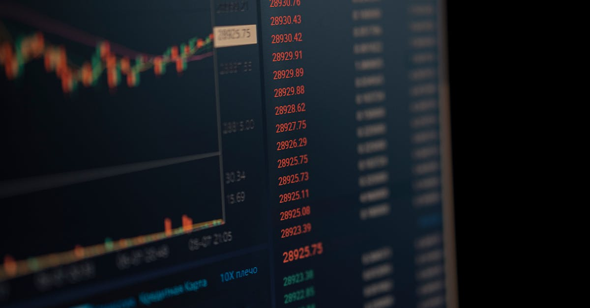

L'IA s'invite dans le Jeu Financier : Une Nouvelle Ère pour les Investisseurs
Le monde de la finance, traditionnellement perçu comme un bastion de l'expertise humaine et de l'intuition, connaît une transformation radicale. L'intelligence artificielle (IA) n'est plus un concept futuriste, mais une réalité tangible qui redéfinit les stratégies d'investissement. Récemment, Bloomberg a mis en lumière cette tendance à travers son format interactif "Pointed News Quiz", où des personnalités du monde des affaires et des médias ont dû naviguer des questions complexes sur l'actualité économique. Cet événement, bien que ludique, souligne une vérité fondamentale : la complexité croissante des marchés financiers exige des outils toujours plus sophistiqués pour en saisir les nuances. Pour les investisseurs, qu'ils soient novices ou chevronnés, comprendre et intégrer ces nouvelles technologies devient non seulement un avantage, mais une nécessité. L'IA, avec sa capacité à traiter des volumes massifs de données et à identifier des schémas invisibles à l'œil humain, promet de révolutionner l'approche de l'investissement, particulièrement dans des marchés aussi volatils et influents que ceux de l'or et des métaux précieux. Cette capacité d'analyse prédictive et d'exécution rapide ouvre des perspectives inédites pour optimiser les rendements et gérer les risques.
👉 À lire : Transport gratuit en Australie : Leçons pour l'or et l'IA
L'essor de l'IA dans la finance n'est pas qu'une simple mode passagère. Il s'agit d'une évolution profonde, comparable à l'introduction des algorithmes de trading haute fréquence il y a quelques décennies. Ces algorithmes ont déjà démontré leur capacité à exécuter des transactions à une vitesse fulgurante, exploitant des micro-fluctuations de prix. L'IA va plus loin en intégrant des capacités d'apprentissage continu, d'analyse prédictive basée sur des facteurs macroéconomiques, géopolitiques et même psychologiques. Imaginez un agent capable d'analyser en temps réel les rapports d'inflation, les tensions internationales affectant l'offre de métaux rares, ou encore le sentiment général du marché sur l'or comme valeur refuge. C'est précisément le type de capacité qui devient crucial dans un environnement économique mondialisé et interconnecté. L'objectif n'est pas de remplacer l'investisseur, mais de lui fournir un copilote intelligent, capable de naviguer les complexités et d'identifier des opportunités là où l'analyse humaine seule pourrait échouer.
👉 À lire : Baisse tensions géopolitiques, or et IA : quelle stratégie ?

L'Or et les Métaux Précieux : Un Terrain de Jeu Idéal pour l'IA
L'or, traditionnellement considéré comme une valeur refuge, et les autres métaux précieux (argent, platine, palladium) présentent des caractéristiques uniques qui en font un terrain de jeu particulièrement fertile pour l'intelligence artificielle. Ces marchés sont influencés par une multitude de facteurs : politiques monétaires, taux d'intérêt, inflation, tensions géopolitiques, demande industrielle, et même des événements imprévus comme des catastrophes naturelles. La complexité de ces interactions rend l'analyse prédictive particulièrement difficile pour les méthodes traditionnelles. C'est là que l'IA excelle. En traitant des milliers de points de données simultanément – des tweets sur la politique monétaire aux rapports sur l'extraction minière, en passant par les indices de volatilité boursière – un agent IA peut identifier des corrélations subtiles et des tendances émergentes bien avant qu'elles ne deviennent évidentes pour les analystes humains.
Prenons l'exemple de l'or. Son prix peut réagir de manière disproportionnée à des annonces de banques centrales ou à des escalades de conflits. Un système d'IA entraîné sur des décennies de données historiques, couplé à une analyse en temps réel des actualités mondiales, peut anticiper ces mouvements avec une précision accrue. Il ne s'agit pas de prédire l'avenir avec certitude, mais de calculer les probabilités et d'agir en conséquence. L'IA peut ainsi identifier des fenêtres d'opportunité pour acheter à bas prix avant une hausse anticipée, ou vendre avant une correction probable. De même, pour des métaux comme le palladium, dont la demande est fortement liée à l'industrie automobile (catalyseurs), l'IA peut analyser les cycles de production, les innovations technologiques (véhicules électriques vs. thermiques) et les politiques environnementales pour ajuster les stratégies de trading. L'automatisation 24h/24 et 7j/7 garantit que ces opportunités ne sont jamais manquées, quel que soit le fuseau horaire ou l'heure de la journée.
Comment l'IA Dépasse les Limites Humaines dans le Trading
L'un des avantages les plus significatifs de l'IA dans le trading des métaux précieux réside dans sa capacité à opérer sans les biais émotionnels qui affectent souvent les décisions humaines. La peur, la cupidité, l'avidité, ou au contraire l'aversion au risque, peuvent conduire à des erreurs coûteuses. Un agent IA, quant à lui, suit des algorithmes et des règles prédéfinies, basées sur des analyses objectives des données. Il ne panique pas lors d'une chute soudaine du marché et n'hésite pas à exécuter une stratégie rentable lorsque les conditions sont réunies. Cette discipline algorithmique est cruciale, surtout lorsque l'on traite des actifs aussi sensibles que l'or, dont la perception peut être fortement influencée par le sentiment du marché.
De plus, l'IA permet une diversification et une gestion du risque bien plus sophistiquées. Un trader humain peut avoir du mal à suivre simultanément plusieurs marchés de métaux précieux, chacun avec ses propres dynamiques. Une IA, en revanche, peut gérer un portefeuille diversifié, allouant des capitaux en fonction de modèles de risque dynamiques et d'opportunités prévues sur différents métaux. Elle peut également exécuter des stratégies complexes comme le hedging automatisé, en achetant ou vendant des instruments dérivés pour se protéger contre des mouvements de prix défavorables. La capacité de l'IA à apprendre et à s'adapter en continu signifie que ses stratégies évoluent avec le marché, garantissant une pertinence et une efficacité accrues sur le long terme. Comme le dirait un hypothétique expert en IA financière : "L'IA ne se contente pas de suivre les marchés, elle apprend à les anticiper, transformant l'investissement d'une science de la réaction en un art de la proaction."

Les Différents Visages de l'IA au Service des Métaux Précieux
L'application de l'IA dans le trading de métaux précieux prend plusieurs formes, chacune répondant à des besoins spécifiques. On trouve d'abord les algorithmes d'analyse prédictive. Ces systèmes utilisent des techniques de machine learning pour analyser des données historiques et en temps réel (prix, volumes, indicateurs économiques, actualités) afin de prévoir les mouvements futurs des prix de l'or, de l'argent, du platine et du palladium. Ils peuvent identifier des tendances, des points de retournement potentiels, et évaluer la probabilité de différents scénarios de marché.
Ensuite, il y a les robots de trading automatisés, souvent appelés 'bots'. Ces agents IA exécutent les transactions de manière autonome, en se basant sur les signaux générés par les algorithmes d'analyse ou sur des règles de trading définies par l'utilisateur. Leur principal avantage est la rapidité d'exécution et la capacité à opérer sans interruption, 24h/24 et 7j/7. Ils sont particulièrement efficaces pour exploiter les opportunités de trading à court terme et pour gérer les positions de manière disciplinée.
Enfin, l'IA est également utilisée pour le gestion de portefeuille et l'optimisation des risques. Des systèmes intelligents peuvent analyser la performance d'un portefeuille existant, identifier les actifs sous-performants ou sur-risqués, et proposer des ajustements pour maximiser le rendement tout en minimisant la volatilité. Ils peuvent également simuler l'impact de différents événements de marché sur le portefeuille et recommander des stratégies de couverture appropriées. L'intégration de ces différentes facettes de l'IA permet de créer des solutions de trading complètes et performantes, adaptées aux spécificités des marchés des métaux précieux.
Sécurité et Transparence : Les Défis de l'IA en Finance
Malgré ses avantages indéniables, l'adoption de l'IA dans le trading des métaux précieux soulève également des questions importantes en matière de sécurité et de transparence. La confiance est un élément fondamental dans toute relation d'investissement, et il est crucial que les utilisateurs comprennent comment fonctionnent les systèmes d'IA qu'ils emploient. Les algorithmes complexes, souvent décrits comme des "boîtes noires", peuvent rendre difficile la compréhension des décisions prises. Pour GoldTrade AI, par exemple, il est essentiel de communiquer clairement sur les méthodologies employées, les types de données analysées, et les mécanismes de contrôle mis en place pour garantir la sécurité des fonds et la fiabilité des stratégies.
La cybersécurité est une autre préoccupation majeure. Les plateformes de trading basées sur l'IA sont des cibles potentielles pour les pirates informatiques. Il est impératif que des mesures de sécurité robustes soient en place pour protéger les données des utilisateurs et prévenir toute manipulation malveillante des systèmes. Cela inclut le chiffrement des données, l'authentification multifacteur, et des audits de sécurité réguliers. La réglementation évolue également pour encadrer l'utilisation de l'IA en finance, cherchant à trouver un équilibre entre l'innovation et la protection des investisseurs. Les entreprises qui opèrent dans ce domaine doivent donc faire preuve d'une vigilance constante, en s'assurant que leurs pratiques sont non seulement performantes, mais aussi éthiques et conformes aux normes en vigueur.

L'Avenir du Trading : Une Symbiose Homme-Machine
L'intégration croissante de l'IA dans le trading de métaux précieux ne signifie pas la fin du rôle de l'investisseur humain. Au contraire, elle ouvre la voie à une nouvelle forme de collaboration : la symbiose homme-machine. L'IA peut prendre en charge les tâches répétitives, l'analyse de données massives et l'exécution rapide, libérant ainsi l'investisseur pour se concentrer sur des aspects plus stratégiques. Cela inclut la définition des objectifs à long terme, la compréhension des implications géopolitiques plus larges qui échappent parfois aux algorithmes, et l'ajustement des paramètres de l'IA en fonction de l'évolution de ses propres convictions ou de son profil de risque.
Imaginez un scénario où un investisseur utilise un agent IA comme GoldTrade AI pour gérer activement son portefeuille d'or et de métaux précieux 24h/24. L'IA identifie des opportunités de trading, gère les risques, et exécute les transactions. Pendant ce temps, l'investisseur peut se consacrer à la recherche de nouvelles opportunités d'investissement dans d'autres classes d'actifs, à la planification financière globale, ou simplement à mieux comprendre les tendances macroéconomiques qui influencent le marché des métaux précieux. L'IA devient un outil puissant, un levier qui amplifie les capacités humaines. Les investisseurs qui sauront exploiter cette synergie seront les mieux placés pour naviguer les complexités des marchés financiers de demain et optimiser leurs rendements dans des secteurs aussi dynamiques que celui de l'or et des métaux précieux.
Conclusion
L'intelligence artificielle est en train de remodeler le paysage de l'investissement, et les marchés de l'or et des métaux précieux ne font pas exception. La capacité de l'IA à analyser des données complexes, à opérer sans émotion, et à exécuter des stratégies 24h/24 offre des avantages considérables aux investisseurs cherchant à optimiser leurs rendements et à gérer les risques. Des algorithmes prédictifs aux robots de trading autonomes, les outils basés sur l'IA permettent de naviguer la volatilité inhérente à ces marchés avec une précision et une efficacité accrues. Bien que des défis subsistent en matière de transparence et de sécurité, l'avenir du trading réside indéniablement dans la collaboration entre l'intelligence humaine et l'intelligence artificielle. Pour les investisseurs avisés, adopter ces technologies, comme celles proposées par des plateformes d'IA dédiées au trading de métaux précieux, n'est plus une option, mais une stratégie clé pour prospérer dans l'économie numérique de demain.